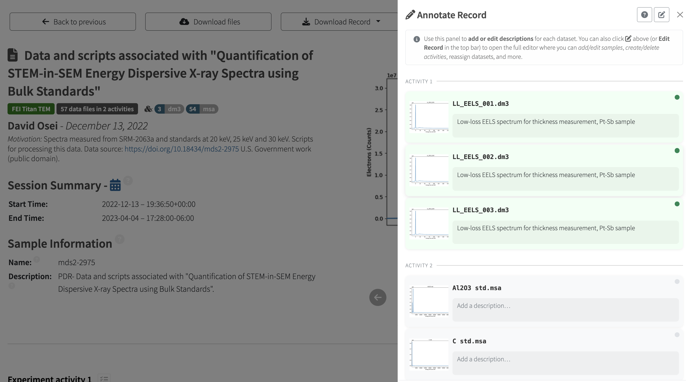
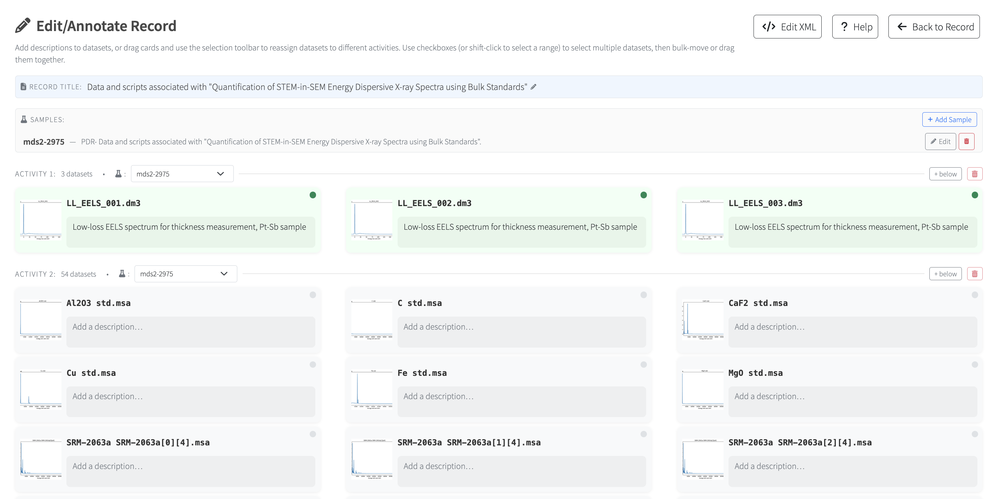
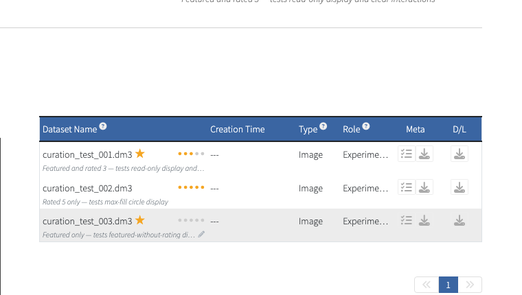

Annotating and Curating Records#
Users with write access can add context to a record using the Annotate Record side panel. Datasets are grouped by acquisition activity with previews and fields for descriptions. A pencil control on a dataset row also opens an inline editor for a single description.


The annotation panel groups datasets by acquisition activity.#
Full-page editor and samples#
The expand control in the panel opens the full-page editor, where you can edit record titles and descriptions, move datasets between acquisition activities, and add, edit, or delete samples and activities. Sample details include names, identifiers, descriptions, and elemental composition. Activity headers provide a sample selection control.


The expanded editor provides space for managing the record and its activities.#
Use Pending Changes in the toolbar to review unsaved edits before saving or
leaving the editor. The annotator is controlled by NX_ENABLE_ANNOTATOR; see
Configuration for deployment settings.
Ratings and featured datasets#
Users with write access can mark a dataset as featured using its star or assign a rating from 1 to 5. Controls appear on the record detail table and in the annotation panel. Use the small × beside an active rating to clear it. These controls save immediately and influence which preview the public gallery selects for a record.


Feature or rate datasets directly from the record detail view.#